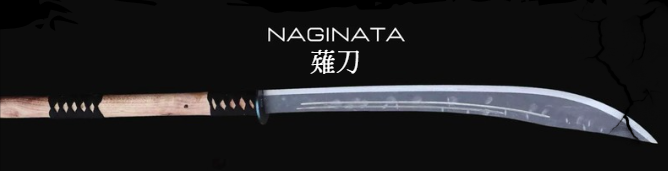

Daishō to zestaw dwóch metalowych mieczy, wręczany samurajom po ukończeniu szkolenia. Zastępują one treningowe, drewniane kopie.
Po japońsku zapisujemy Daishō jako: 大小
Więc 大小 dosłownie oznacza "duży-mały", odnosząc się do dwóch mieczy: długiej katany (刀) i krótkiego wakizashi (脇差).
Katana, zapisana znakami kanji, po japońsku po prostu znaczy "miecz".
Ze znaków:
Co prawda nie byla ona jednak używana przez samurai,
Bowiem,w epoce edo dziewczynki z wyższych sfer także uczęzczały do szkółki samurai
Co prawda, ich szkolenia wyglądały inaczej, nie skupiały się, tak jak u chłopców głownie na walce,
natomiast dalej przygotowywały one młode kobiety do obcjonalne walki, używały naginaty, nie dostawały swojego Daishō
